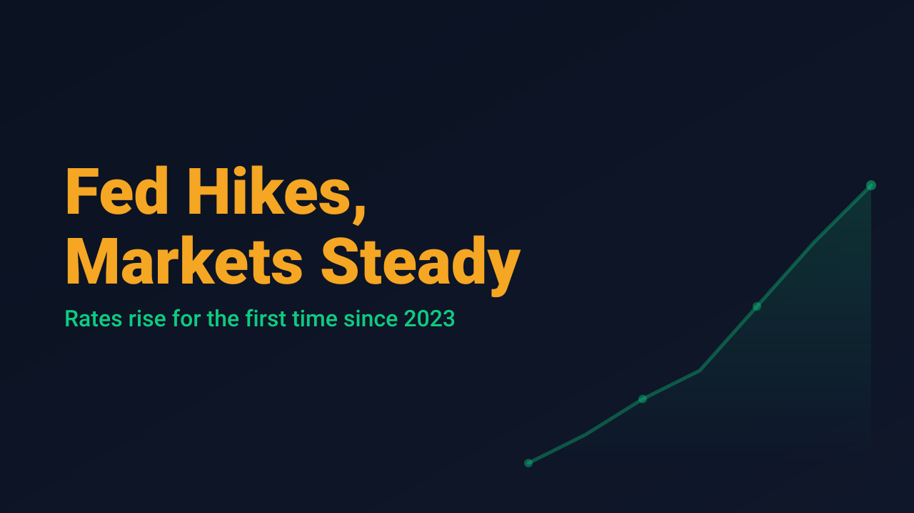
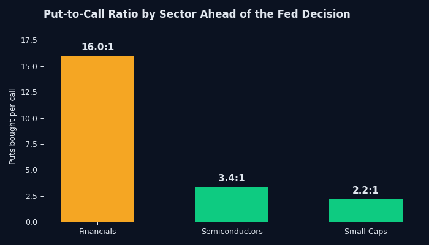

Fed's First Rate Hike Since 2023 Rattles Stocks, Then Steadies

The Federal Reserve raised the federal funds rate by 25 basis points on Wednesday, taking the target range to 3.75% to 4.00%. It was the first increase in three years, and the decision was unanimous. The Fed's updated Summary of Economic Projections put the median expected rate at 4.1% by the end of 2026, and 16 of the 18 officials on the committee see at least one more hike before year end, according to Kiplinger's coverage of the meeting.
The immediate market reaction was rough. The Dow Jones Industrial Average fell more than 600 points, or 1.2%, on the day of the decision, with financial services names doing most of the damage, according to TheStreet. The S&P 500 dropped roughly 0.4% to 0.5%, while the Nasdaq Composite finished little changed. The 10 year Treasury yield climbed to 5.01% as bond markets repriced for a slower path back to easier policy.
The more telling move happened in the options market before the decision even landed. Cboe's options desk noted that the single stock put to call ratio rose from 0.69 to 0.875 in the week leading into the meeting, and the hedging was not spread evenly. Financials saw 16 puts bought for every call, semiconductors saw 3.4 puts per call, and small caps saw 2.2 puts per call. Traders were not hedging the market broadly. They were hedging the parts of it most sensitive to borrowing costs.

By Thursday, futures were clawing back some of the loss. Dow futures were up roughly 0.7%, S&P 500 futures gained about 0.8%, and Nasdaq 100 futures added about 1.1%, per CNBC's live updates. The S&P 500 itself rose about 0.59% on the day. It is a pattern that shows up often around Fed decisions: a sharp initial repricing followed by a partial recalculation once the immediate shock has been absorbed.
Rate decisions do not reward guessing. They reward having a framework that already knows which names carry real exposure and which ones just got caught in the crossfire. This week's hike, and the sector specific hedging that preceded it, is a clean example of why that distinction matters more than the headline index move.